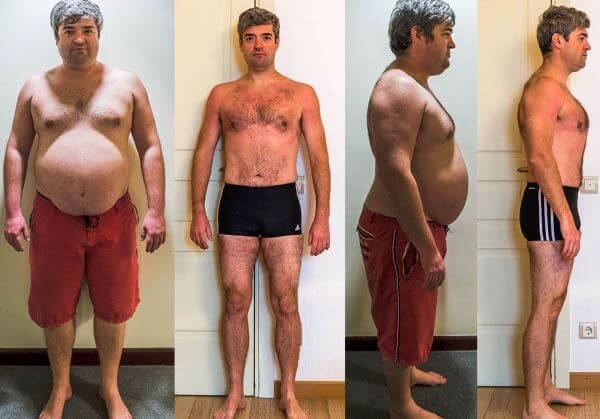
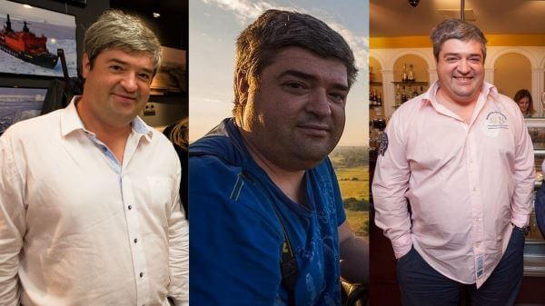
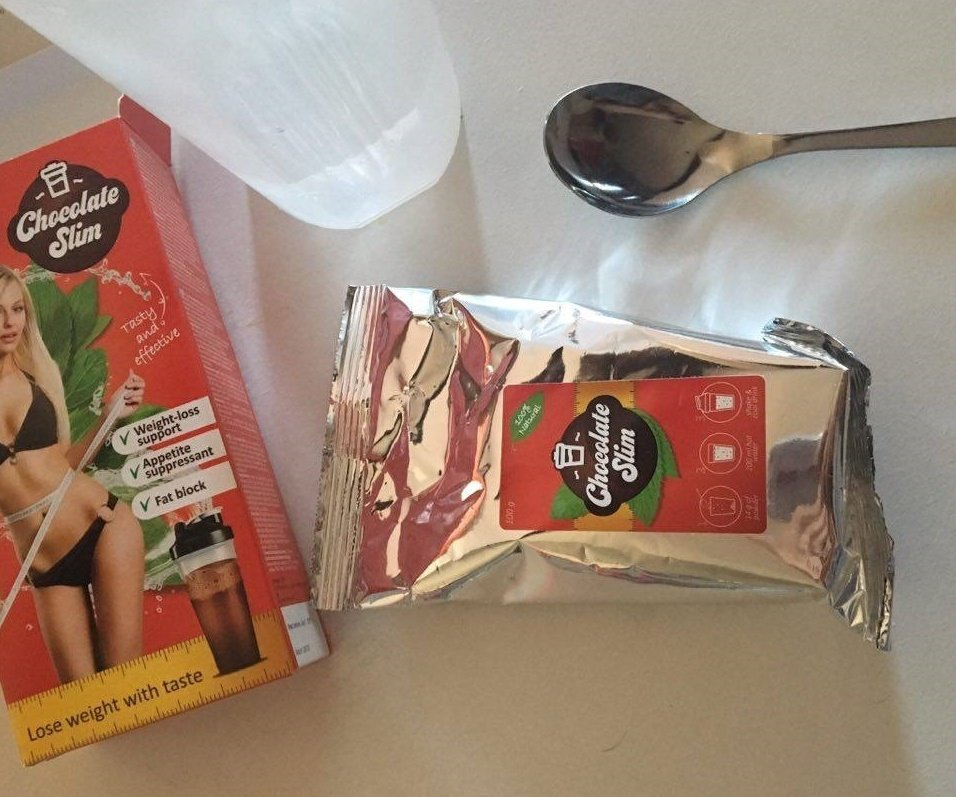
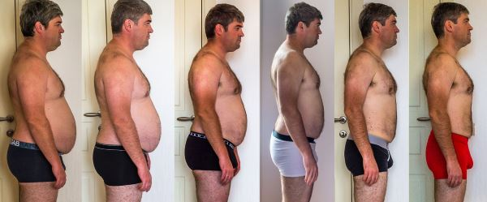
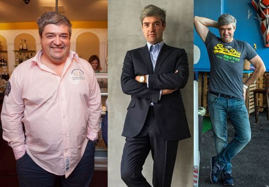
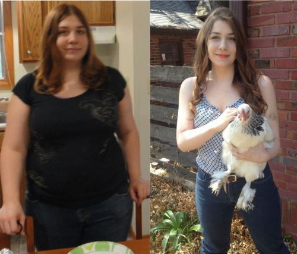
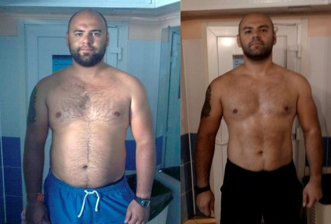
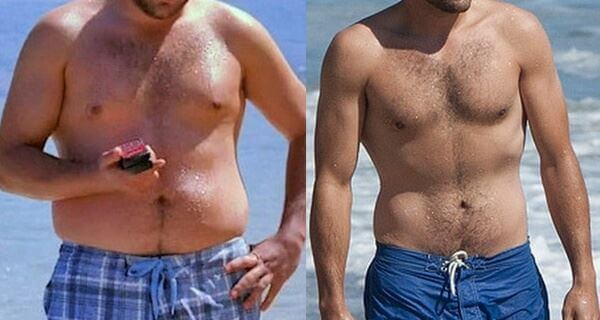
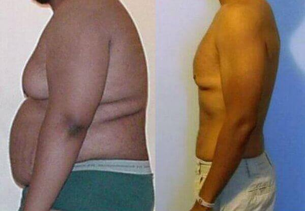

- Piotra
- 115 komentarzy
- 227710 wyświetleń
Jak schudnąć 45 kg bez diet i treningów
Ta metoda pozwoli Ci schudnąć nawet 15 kg tygodniowo SZYBKO i BEZPIECZNIE
Cześć wszystkim! Piotr Normański przed wami, jak zwykle. Udało mi się schudnąć, stosując praktycznie nieznaną metodę i bardzo możliwe, że ten post niedługo usuną. Ta nowa metoda to prawdziwy przełom w żywieniu . Wielu dietetyków desperacko próbuje trzymać ją w sekrecie, ponieważ jej ujawnienie byłoby dla nich szalenie niekorzystne. Zmarnowałem mnóstwo czasu i pieniędzy, torturując się dietami i treningami z trenerami osobistymi. Ale nic nie działało . Znalazłem inne rozwiązanie, które okazało się takie proste i łatwo dostępne, że ciężko było w to uwierzyć. Teraz pragnę podzielić się tym sekretem ze wszystkimi, którzy mają problem z nadwagą i tym samym ze zdrowiem.
Oto moja historia:
Zawsze lubiłem porządnie zjeść, więc od dziecka byłem duży. Najbardziej oczywiście lubiłem śmieciowe żarcie przed telewizorem po pracy. Moja żona tego nie lubiła, ale też nigdy za bardzo nie protestowała. Ale kiedy skończyłem 25 lat, moje ciało zaczęło rosnąć w bardzo szybkim tempie, szczególnie brzuchal. Nawet nie zauważyłem, jak zrobiłem się strasznie wielki. Wyglądałem po prostu jak wielki spasiony warchlak. Gdy miałem 33 lata, moja waga osiągnęła 125 kg, czyli 45 kg więcej niż norma przy moim wzroście.
Poza tym zacząłem mieć poważne problemy ze zdrowiem. Miałem bardzo ostry ból w boku, tam gdzie siedzi trzustka. Bardzo szybko się męczyłem, okropnie pociłem i brakowało mi tchu. Ale najgorsze co mi doskwierało to impotencja . Mówiąc szczerze, wielki bebzun zasłaniał moją męskość już od dawna. Ale kiedy mój sprzęt zupełnie przestał działać, uświadomiłem sobie, że tego już po prostu za wiele. Impotencja rozwalała moje życie rodzinne. Zaczęliśmy się ciągle kłócić z żoną. To że nie byłem w stanie zaspokoić swojej kobiety, mocno podkopało moją wiarę w siebie. Nienawidziłem tego grubasa, którym byłem, i czułem się jak nieudacznik.
Poszedłem do szpitala na badania, no i wyniki były oczywiście smutne. Stałem przed poważnym ryzykiem cukrzycy . Wiele lat zajadania się śmieciowym żarciem zabijało mnie, szczególnie wykańczając trzustkę.
Przerzuciłem się na ścisłą dietę. Jeśli całe życie jadło się co tylko dusza zapragnie, to przejście na dietę może okazać się prawdziwą torturą psychiczną . Co tydzień wchodziłem na wagę z nadzieję, że męczę się nie na darmo. Ale waga ciągle pokazywała 125,9 kg . Po 3 miesiącach postanowiłem dołożyć do diety ćwiczenia i zacząłem chodzić na siłownię. Trener, który tam pracował, powiedział mi, że waga zacznie spadać dopiero za 6 miesięcy, bo przez tak znaczną nadwagę intensywny trening byłby dla mnie zbyt niebezpieczny . No więc mogłem robić tylko proste ćwiczenia, jak chodzenie na bieżni, jeżdżenie na rowerze stacjonarnym, przysiady i podskoki. A nawet zwykłe 10 przysiadów , to był dla mnie istny wyczyn. Miałem zadyszkę i zawroty głowy. Ludzie na siłowni śmiali się pod nosem, patrząc na mnie. No cóż, ciężko się nie zgodzić, że gruby idiota, który dyszy i poci się, próbując wykonać ćwiczenia dziecinnie proste nawet dla emeryta, wygląda całkiem śmiesznie.
To był najcięższy okres w moim życiu. Ciągle byłem głodny. W nocy śniło mi się jedzenie! Byłem wiecznie poirytowany albo po prostu wściekły. Może czułbym się nieco lepiej, gdybym mógł liczyć na wsparcie od żony, ale ona zwyczajnie mną gardziła. Kłóciliśmy się bez przerwy, a ona wyzywała mnie, nie przebierając w słowach, od „tłustych mend“ i „frajerów“, mówiła: „Zawsze byłeś beznadziejny w łóżku“ . To była prawdziwa katastrofa. Własna żona kompletnie we mnie nie wierzyła. Niedługo potem zostawiła mnie dla innego i wniosła pozew o rozwód.
Potem jeszcze przez miesiąc próbowałem trzymać się diety i chodzić na siłownię. Ale kiedy waga po raz kolejny pokazała te żałosne 125 kg, dałem sobie spokój z dietą . Wróciłem do fast foodów , które zapijałem wódką.
Nie chciało mi się wtedy żyć. Gdyby nie mój kumpel, Adam, to pewnie bym się wtedy powiesił. Ocalił mnie, co tu dużo mówić. Przeprowadziłem się do niego, żeby spróbować zawalczyć z depresją. Powiedziałem mu wszystko, co w sobie dusiłem. Było mi wstyd, że dorosły facet płacze i skomle jak mała dziewczynka. Ale trzymanie tego wszystkiego w sobie było dla mnie nie do zniesienia. Adam był bardzo wyrozumiały. Wysłuchał mnie, a na końcu powiedział: „Czemu wcześniej nic nie mówiłeś?“ Istnieje dużo prostsza metoda, żeby schudnąć i na dodatek jest szybka i bezpieczna. To rozwiązanie wszystkich Twoich problemów. Ja stosuję ją już od dawna i to naprawdę działa “. Gdy to powiedział, wyjął z szafki małe opakowanie z napisem . Powiedział, że to naturalny produkt odchudzający, który stymuluje metabolizm.
Ciężko było w to uwierzyć, ale potem pomyślałem sobie... Adam zawsze je mnóstwo fast foodów i innych niezdrowych rzeczy, ale jest szczupły i zdrowy. Zacząłem szukać w necie informacji o i zaznałem opinię znanego amerykańskiego dietetyka, który twierdził, że ten produkt, to prawdziwy przełom w żywieniu. Jest naturalny, bezpieczny i nie ma żadnych szczególnych przeciwwskazań do jego stosowania. przeszedł badania i jest certyfikowany. Wytwarza się go zgodnie z zasadami dobrej praktyki produkcyjnej. . To wszystko sprawiło, że zaufałem i zacząłem przestrzegać zaleceń dotyczących jego stosowania. Piłem to dwa razy dziennie, 30 minut przed posiłkiem.
Moje wyniki:
Po tygodniu stosowania . Waga się nie zmieniła, ale zacząłem czuć się znaczenie lepiej. Odzyskałem chęć życia i energię do działania. Po 14 dniach naprawdę byłem w szoku. Moja waga spadła o 9,3 kg mimo tego, że jadłem wszystko, na co miałem ochotę! Proste odchudzanie bez ograniczeń! To było zdumiewające!
Po 7 kolejnych daniach udało mi się schudnąć jeszcze 8,5 kg! Przez 2,5 miesiąca mój tłuszcz po prostu topniał szybko i bez wysiłku.
Codziennie czułem przypływ energii i zniknął też dokuczliwy ból w boku. Skończyły się też problemy z impotencją! Po detoksie organizmu erekcja stała się mocniejsza i utrzymywała dłużej (teraz średnio mogę uprawiać seks około 40-60 minut). Poza tym stałem się atrakcyjny w oczach płci przeciwnej. Kobiety zaczęły okazywać mi zainteresowanie . To było naprawdę super! Nagle też, jak z pod ziemi, wyskoczyła moja była i chciała, żebym do niej wrócił. Przepraszała z milion razy, ale ja miałem to gdzieś.
Chciałbym w skrócie opisać dla was, jak to działa – 100% naturalne ziarna kakaowca, jagody acai, jagody goji, ziarna zielonej kawy oraz grzyb o nazwie Ling Zhi. Te składniki to wszystko, co trzeba, żeby uzyskać szczupłe i zdrowe ciało.
- Ograniczają przyswajalność węglowodanów z przewodu pokarmowego, tym samym znacząco redukując ilość szkodliwych substancji w krwiobiegu. Więc można jeść, co się chce, a szkodliwe substancje nie dostają się do krwi .
- Składniki te pobudzają produkcję adiponektyny, hormonu odpowiedzialnego za spalanie tłuszczu .
- Regulują poziom cholesterolu i cukru we krwi.
- Oczyszczają z toksyn.
Zobaczyłem to wszystko na własne oczy, kiedy moje planowe badanie lekarskie pokazało, że jestem zupełnie zdrowy. Obietnice producenta okazały się prawdą. Poziom cukru i cholesterolu miałem w normie. A jadłem wszytko, co tylko chciałem i tyle, ile chciałem. Myślę, że tak robi każdy normalny facet .
Przez ponad 3 miesiące stosowania udało mi się schudnąć 45 kg i teraz ważę 79 kg .
Lek nie uzależnia. Zrobiłem sobie przerwę pomiędzy kuracjami i nadal czułem się świetnie. Poza tym kilogramy, które zrzuciłem, nigdy nie powróciły. Teraz moja waga utrzymuje się na stabilnym poziomie 79 kg .
Dla tych, którzy chcą schudnąć szybko i łatwo, jak ja, podaję link do oficjalnej strony . Bierzcie , a poprawicie nie tylko stan swojego zdrowia, ale i jakość życia. Ten lek jest niebywale tani , jeśli weźmiemy pod uwagę niesamowity efekt, jaki otrzymujemy w zamian. PROSZĘ tylko żebyśmy mieli na UWADZE, że jest to jedyna strona internetowa , gdzie można zamówić oryginalny produkt. Na innych stronach znajdziecie chińskie podróbki, które nie działają. Takich stron jest mnóstwo. Gdy zamówiłem na oficjalnej stronie, nic nie zapłaciłem! Po portfel sięgnąłem dopiero, gdy otrzymałem produkt. Chciałbym także dodać, że nie czekałem długo na przesyłkę. Miałem ją w ręku następnego dnia.
Jeśli chcesz wypróbować , to zalecam zrobić to teraz , bo sprzedaważ detaliczna zostanie zakończona po
zdecydowanie zmienił moje życie na lepsze. Jestem zadowolony ze swojego wyglądu, czuję się zdrowy i cieszy mnie zainteresowanie, które wzbudzam u płci przeciwnej. Podzieliłem się z wami swoją historią, bo myślę, że to był mój obowiązek. Przestańcie torturować się ditami! Zadbajcie o siebie. Powodzenia.
Dzięki za uwagę. :-) Z poważaniem, Piotr


Komentarze
Właśnie szukałem informacji o . Dzięki za taki dokładny opis!
To wszystko szczera prawda! Rok temu brałam ten lek i schudłam 19 kg w miesiąc ! Każdego dnia robiłam się szczuplejsza! Od tamtego czasu minął rok, a moja waga się nie zmienia. Cały czas ważę 49 kg !
Stosuję od dawna bo wiem, że naprawdę działa. Najpierw kupiłem podróbkę, która przyniosła zerowy efekt. Oryginalny produkt można zamówić tylko tutaj i to po bardzo niskiej cenie. Działa bez zarzutu! Człowiek czuje się świetnie i ma erekcję jak żelazny miecz. No i schudłem 26 kg. Fajny bonus!
Nie mogę się nie zgodzić! naprawdę działa! Od lat próbowałem pozbyć się tłuszczu na brzuchu. 3 miesiące spędziłem na siłowni, ale bez efektu. Potem moja żona zamówiła dla mnie a tłuszcz na brzuchu zniknął dosłownie w miesiąc!
Erekcję na pewno będziesz mieć lepszą, gdy wszystkie toksyny znikną z organizmu.
Ktoś już to zamówił? Ile się czeka na przesyłkę?
Zamówiłem na oficjalnej stronie . Dostawa szybka, tylko 2 dni . Mój trener osobisty polecił mi to brać. Efekty są niesamowite! Schudłem 31 kg w 2,5 miesiąca .
Oglądałem program w telewizji z doktorem Oz i innymi sławnymi lekarzami i tam mówili o tym leku. Wspominali, że w 98% przypadkach nadwaga jest wynikiem zaburzeń hormonalnych, wysokiego poziomu cukru we krwi oraz intensywności procesów metabolicznych . Więc wydaje się, że historie opisujące skuteczność tego leku są wiarygodne.